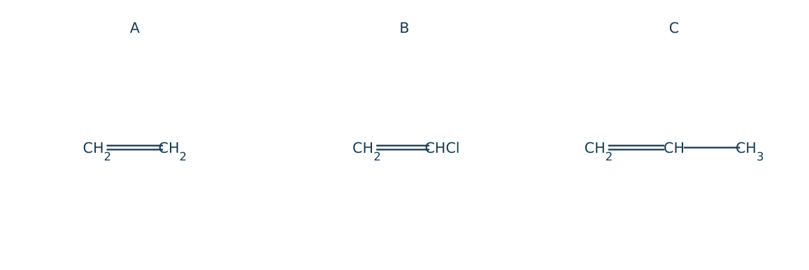
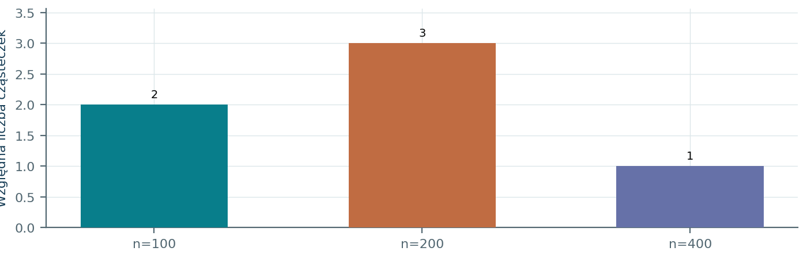
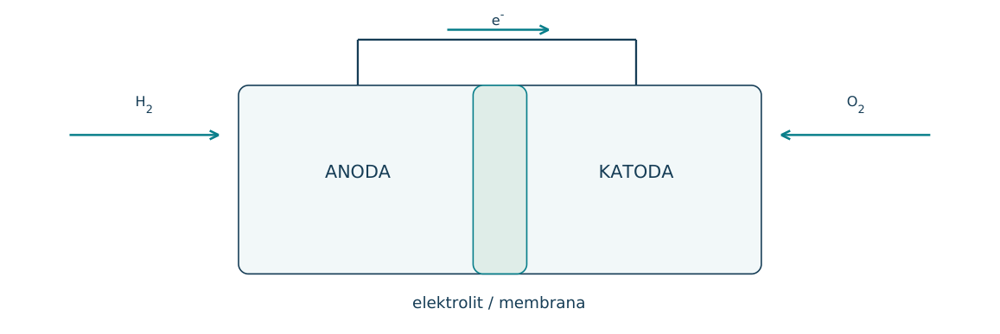
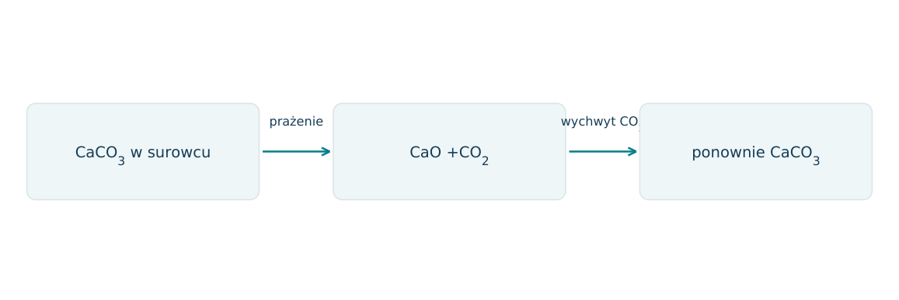
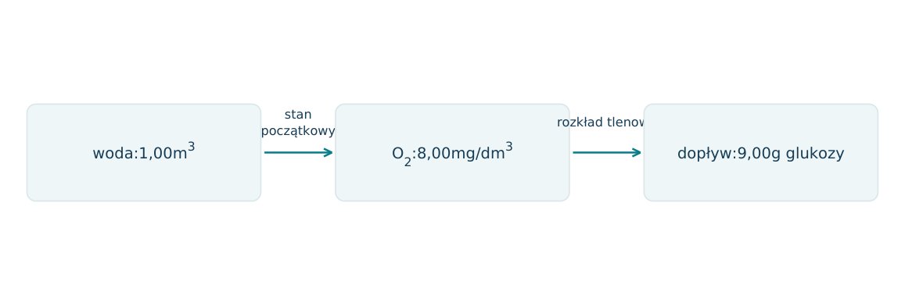
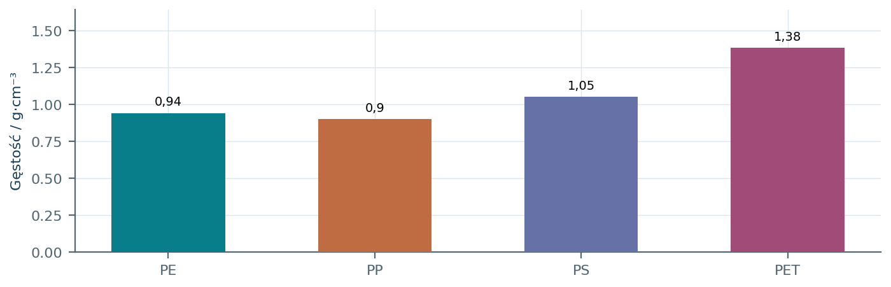
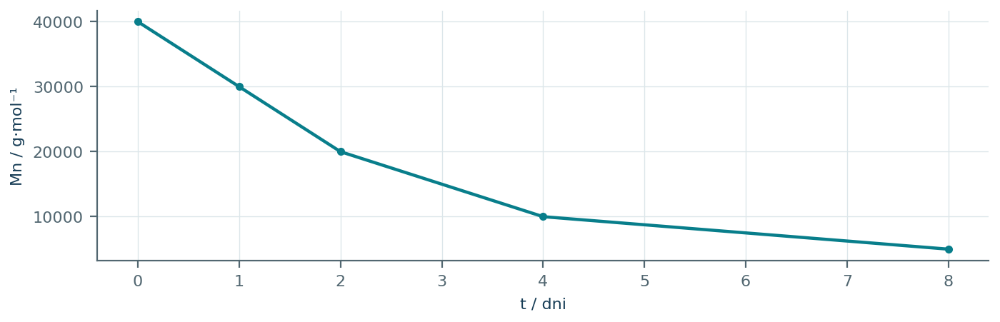
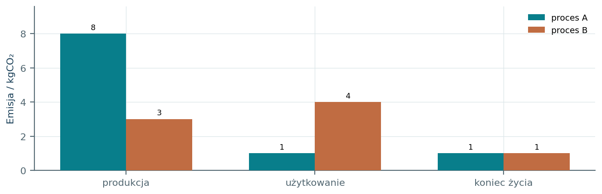

24.01 · 1 pkt
Na jakiej różnicy właściwości opiera się destylacja frakcyjna ropy naftowej?
Rozwiązanie
- Różnej lotności i zakresach temperatur wrzenia składników.
50 zadań · 120 pkt · odpowiedzi rozwijane po samodzielnej próbie
← KatalogZadania PDFRozwiązania PDFDane do obliczeń: H 1; C 12; N 14; O 16; Na 23; Mg 24; Al 27; P 31; S 32; Cl 35,5; K 39; Ca 40; Cr 52; Mn 55; Fe 56; Cu 64; Zn 65; Ag 108; Br 80; I 127; Ba 137 (g/mol). NA = 6,02·1023 mol-1. Vm = 22,4 dm3/mol w warunkach normalnych (0°C, 1013 hPa). W 25°C Kw = 10-14. Dane podane w zadaniu mają pierwszeństwo.
Na jakiej różnicy właściwości opiera się destylacja frakcyjna ropy naftowej?
Oceń zdania A i B, wpisując P albo F. Każde zdanie fałszywe popraw lub krótko uzasadnij. A: Kraking może tworzyć mniejsze alkany i alkeny. B: Tworzywo biopochodne musi być biodegradowalne.
Uzupełnij kraking: C10H22 → C8H18 + X. Podaj X i typową cechę jego reaktywności.
Czym różni się kraking od izomeryzacji alkanu?
Napisz polimeryzację chloroetenu i podaj nazwę polimeru.
Napisz polimeryzację tetrafluoroetenu i nazwij polimer.
Polimer ma mer -CH2-CH(C6H5)-. Podaj monomer i nazwę polimeru.
Źródło: poliester powstaje z diolu i dikwasu z odszczepieniem H2O. Napisz mer z HOCH2CH2OH i HOOC-C6H4-COOH w położeniu para.
Porównaj polimeryzację addycyjną i polikondensację pod kątem produktów małocząsteczkowych.
Polietylen ma średnią masę molową 140000 g/mol. Oblicz przybliżony stopień polimeryzacji, pomijając grupy końcowe.
Źródło: liczba oktanowa 95 oznacza odporność na spalanie stukowe jak mieszanina 95% objętościowych izooktanu i 5% n-heptanu. Czy benzyna LO95 musi mieć taki skład? Jak rozgałęzianie alkanów wpływa zwykle na LO?
Źródło: piroliza węgla kamiennego bez dostępu powietrza daje koks, gaz koksowniczy, smołę i wodę pogazową. Wybierz produkt stały do redukcji rud i produkt wymagający rozdzielenia wielu związków organicznych.
Informacja: PLA jest poliestrem z reszt kwasu mlekowego. Wskaż wiązanie podatne na hydrolizę i monomer otrzymany po pełnej hydrolizie.
Napisz równanie reakcji NaHCO3 z HCl w modelu neutralizacji kwasu przez składnik preparatu zobojętniającego. Nazwij gaz.
Informacja: węgiel aktywowany wiąże część substancji na rozbudowanej powierzchni. Nazwij proces i wyjaśnij znaczenie rozdrobnienia.
Na etykiecie podano 200 mg substancji w tabletce; M=200 g/mol. Oblicz liczbę moli w jednej tabletce. Nie ustalaj dawkowania.
Źródło: herbata zawiera polifenole, woda mineralna może zawierać Ca2+ i Mg2+, a kwas acetylosalicylowy ogranicza syntezę prostaglandyn związanych m.in. z bólem. Wybierz składnik powodujący twardość wody i wyjaśnij, czemu sam kwaśny odczyn nie tłumaczy działania tego leku.
Informacja: toksyczność zależy od dawki, drogi wnikania i rozpuszczalności. Dlaczego samo porównanie nazw dwóch substancji nie wystarcza do oceny ryzyka?
Napisz fermentację mlekową glukozy do kwasu mlekowego i wskaż liczbę atomów C w produkcie.
Dlaczego podczas wypieku ciasto z drożdżami zwiększa objętość? Powiąż proces chemiczny z gazem.
Informacja: napój zawiera H3PO4 i rozpuszczony CO2. Podaj dwie przyczyny kwaśnego odczynu.
Informacja: mleko zawiera laktozę i białka; kawa zawiera kofeinę. Zaproponuj próbę potwierdzającą wiązania peptydowe w mleku i wyjaśnij, czemu sam obecny N nie dowodzi białka.
Środek do rur zawiera NaOH, a odkamieniacz kwas. Wyjaśnij ich działanie odpowiednio na tłuszcz i CaCO3.
Informacja: wybielacz zawiera ClO-. W kwasie może reagować z Cl-: ClO-+Cl-+2H+→Cl2+H2O. Wyjaśnij chemiczny powód zakazu mieszania z odkamieniaczem.
Zaprojektuj porównanie sorpcji barwnika przez glebę: podaj próbę kontrolną i obserwację wspierającą hipotezę sorpcji.
Jak porównać kwasowość dwóch próbek gleby tak, by wyniki były porównywalne? Podaj przygotowanie i pomiar.
Dane pH gleby: A=4,0, B=6,0. Oblicz stosunek [H3O+] w ekstraktach i wskaż bardziej kwaśny.
Zapisz reakcję CaCO3 z H+ wyjaśniającą wapnowanie kwaśnej gleby.
Powiąż zanieczyszczenia z głównym problemem: SO2, CO2, azotany(V) i fosforany(V).
Podano model: SO2 utlenia się do SO3, a SO3 reaguje z wodą. Napisz oba równania prowadzące do H2SO4.
Spalono całkowicie 12,0 kg pierwiastkowego C. Oblicz masę CO2.
W 2,0 dm3 wody oznaczono 0,020 g NO3-. Oblicz stężenie w mg/dm3 i mol/dm3, M(NO3-)=62 g/mol.
Informacja: katalizator samochodowy może prowadzić reakcję 2CO+2NO→2CO2+N2. Wskaż utleniacz, reduktor i korzyść przemiany.
Informacja: rodnik Cl· w stratosferze odtwarza się w cyklu: Cl·+O3→ClO·+O2; ClO·+O→Cl·+O2. Podaj reakcję sumaryczną i rolę Cl·.
Zielona chemia zaleca ograniczanie odpadów u źródła. Porównaj wybór katalizatora wielokrotnego użycia z oczyszczaniem już wytworzonych odpadów.
Dla reakcji A+B→P jedynym produktem jest P, M(A)=60, M(B)=40, M(P)=100 g/mol. Oblicz ekonomię atomową z wzoru EA=M(P)/sum(M substratów)·100%.
Reakcja A+B→P+W ma M(A)=80, M(B)=40, M(P)=90, M(W)=30 g/mol. Oblicz ekonomię atomową tworzenia P i porównaj z wydajnością.
Proces I daje 80 g produktu i 20 g odpadów, proces II 90 g produktu i 90 g odpadów. Oblicz E-factor=m_odpadów/m_produktu i wybierz mniejszy.
Informacja: opakowanie PET można rozłożyć do diolu i dikwasu, a następnie ponownie spolimeryzować. Nazwij typ recyklingu i rozrywane wiązanie.
Proces A: 100 g produktu, 25 g odpadów, energia 3,0 MJ. Proces B: 120 g produktu, 60 g odpadów, energia 2,4 MJ. a) Oblicz E-factor=m_odpadów/m_produktu. b) Oblicz energię na gram produktu. c) Wskaż korzystniejszy proces według każdego kryterium. d) Podaj dwie dodatkowe informacje potrzebne do szerszej oceny środowiskowej.
Każdy numer 41-50 oznacza jedno zadanie główne; podpunkty są oceniane osobno.
Na rysunku są monomery: eten, chloroeten oraz propen. Podczas addycyjnej polimeryzacji rozrywa się wiązanie pi, a skład pierwiastkowy jednostki odpowiada monomerowi, bez wydzielania małych cząsteczek.

24.41.1 (2 pkt) Zapisz wzory jednostek powtarzalnych trzech polimerów.
24.41.2 (1 pkt) Oblicz udział masowy Cl w idealnym PVC, M jednostki 62,5 i MCl35,5.
24.41.3 (1 pkt) Czy spalanie próbki zawierającej Cl można traktować jak spalanie czystego PE z produktami wyłącznie CO2 i H2O?
A[-CH2-CH2-]n; B[-CH2-CHCl-]n; C[-CH2-CH(CH3)-]n.
35,5/62,5·100%=56,8%.
Nie; trzeba uwzględnić produkty zawierające chlor i odpowiednie warunki procesu.
PET powstaje z kwasu tereftalowego HOOC-C6H4-COOH i etano-1,2-diolu. Wewnętrzna jednostka powtarzalna ma fragment -OCH2CH2OCOC6H4CO-. M monomerów wynosi 166 i 62. Licząc masę długiego łańcucha, pomiń grupy końcowe.
24.42.1 (2 pkt) Oblicz M jednostki i masę wody na 1 mol takich jednostek.
24.42.2 (1 pkt) Ile moli jednostek zawiera 19,2 kg PET w tym przybliżeniu?
24.42.3 (1 pkt) Dlaczego pełna hydroliza PET daje monomery, podczas gdy zwykła hydroliza PE nie zachodzi analogicznie?
Mjednostki=166+62-2·18=192 g/mol; woda 36 g.
19200/192=100 moli.
PET zawiera hydrolizowalne wiązania estrowe; PE ma szkielet C-C bez takich grup.
Liniowy łańcuch utworzono z 50 cząsteczek diaminy i 50 cząsteczek dikwasu, wykorzystując połączenia naprzemienne, bez cyklu. M diaminy 116, dikwasu 146. Każde wiązanie amidowe usuwa 1H2O.
24.43.1 (2 pkt) Ile wiązań amidowych i cząsteczek H2O powstaje w jednym takim łańcuchu?
24.43.2 (1 pkt) Oblicz dokładną M tego łańcucha.
24.43.3 (1 pkt) Porównaj z 50M jednostek wewnętrznych i wyjaśnij różnicę.
Łączy się 100 cząsteczek w jedną: 99 wiązań i 99H2O.
50·116+50·146-99·18=11318 g/mol.
Jednostka 226 g/mol, 50·226=11300; różnica 18 wynika z grup końcowych (jedna H2O mniej odłączona).
Próbki polistyrenu mają jednakowy rodzaj jednostki, Mjednostki 104 g/mol. Wykres pokazuje liczbę cząsteczek w trzech klasach długości: 100,200 i 400 jednostek. Grupy końcowe pomiń. Średnia liczbowa Mn=sum(NiMi)/sumNi.

24.44.1 (2 pkt) Oblicz średni liczbowy stopień polimeryzacji i Mn.
24.44.2 (1 pkt) Jaki udział masowy ma najdłuższa klasa?
24.44.3 (1 pkt) Dlaczego udział liczbowy 1/6 nie jest równy udziałowi masowemu?
nśrednie=(2·100+3·200+1·400)/6=200; Mn20800 g/mol.
1·400/(2·100+3·200+1·400)=1/3=33,3%.
Dłuższa cząsteczka waży więcej; średnie i udziały wymagają odpowiedniego ważenia.
W modelowym ogniwie 2H2+O 2→2H2O. Do uzyskania użytecznej energii 10,0MJ potrzebna jest energia chemiczna 20,0MJ, czyli sprawność 50%. Wartość energetyczna H2 wynosi 120MJ/kg. Porównywany metan daje 50,0MJ/kg przy tej samej sprawności; MCH4=16, MCO2=44.

24.45.1 (2 pkt) Oblicz masę H2 i masę CH4 potrzebne do 10,0MJ energii użytecznej.
24.45.2 (1 pkt) Oblicz CO2 ze spalenia tej masy CH4.
24.45.3 (1 pkt) Czy brak CO2 w reakcji samego ogniwa dowodzi zerowej emisji całego cyklu?
H2: 20/120=0,1667 kg; CH4: 20/50=0,400 kg.
0,400·44/16=1,10 kgCO2.
Nie; trzeba uwzględnić produkcję i transport H2 oraz źródło wykorzystanej energii.
W modelowym cyklu CaCO3→CaO+CO2, następnie CaO+CO2→CaCO3. Wyprażono 100 kg surowca zawierającego 90,0% CaCO3. CaCO3 rozłożył się całkowicie; domieszki nie reagują. Powstały CaO wychwycił 80,0% swojej teoretycznej ilości CO2.

24.46.1 (2 pkt) Oblicz masę CO2 uwolnioną podczas prażenia i wychwyconą w drugim etapie.
24.46.2 (1 pkt) Jaki jest bilans netto CO2 samych dwóch przemian?
24.46.3 (1 pkt) Dlaczego bilans nie opisuje automatycznie pełnego wpływu instalacji na emisje?
90·44/100=39,6 kg; wychwyt 0,80·39,6=31,68 kg.
Emisja 39,6-31,68=7,92 kg.
Pomija energię ogrzewania, transport i inne procesy dostarczające lub pochłaniające CO2.
W modelu całkowity tlenowy rozkład glukozy zachodzi C6H12O6+6O2→6CO2+6H2O. Do 1,00m3 wody trafia 9,00 g glukozy. Początkowo w wodzie jest 8,00 mgO2/dm3. Pomiń dopływ tlenu i inne reakcje.

24.47.1 (2 pkt) Oblicz zapotrzebowanie na O 2 i oceń, czy tlenu wystarczy.
24.47.2 (1 pkt) Jaka największa masa glukozy może zostać utleniona przy tym zapasie O 2?
24.47.3 (1 pkt) Wyjaśnij, dlaczego nawet substancja biodegradowalna może pogorszyć warunki życia organizmów wodnych.
nG=0,0500; nO2=0,300; m=9,60 g. Dostępne 8,00 g, więc zabraknie 1,60 g.
8,00/192·180=7,50 g.
Jej mikrobiologiczny rozkład zużywa rozpuszczony O 2 i może spowodować niedotlenienie.
Podano gęstości PE0,94; PP0,90; PS1,05; PET1,38 g/cm3. Rozdrobnione próbki nie zawierają pęcherzy i nie nasiąkają. Użyto wody 1,00 oraz roztworu soli 1,10 g/cm3. Ciało pływa, gdy ma mniejszą gęstość niż ciecz.

24.48.1 (2 pkt) Zaproponuj dwa etapy rozdzielenia PET, PS oraz wspólnej frakcji PE/PP.
24.48.2 (1 pkt) Czy te dwie ciecze pozwolą rozdzielić PE od PP?
24.48.3 (1 pkt) Oblicz objętość 100 g mieszaniny 50%mas.PE i 50%mas.PET, zakładając addytywność objętości.
W wodzie PE/PP pływają, PS/PET toną. Tonącą frakcję przenieść do cieczy 1,10: PS pływa, PET tonie.
Nie; oba pływają w obu cieczach.
V=50/0,94+50/1,38≈89,4 cm3.
Hydrolizę modelowego biodegradowalnego poliestru śledzono przez średnią masę molową. Masa całej próbki nie zmieniła się istotnie, a Mn spadło zgodnie z wykresem. Załóż, że każde przecięcie jednego wiązania w liniowym łańcuchu daje dwa łańcuchy i nie tworzy cyklu.

24.49.1 (2 pkt) Ile razy wzrosła liczba moli łańcuchów do 4 dnia przy tej samej masie próbki?
24.49.2 (1 pkt) Dla 1,00 g próbki oblicz przyrost liczby moli łańcuchów i odpowiadającą liczbę moli przeciętych wiązań.
24.49.3 (1 pkt) Czy spadek Mn sam dowodzi całkowitej mineralizacji doCO2 iH2O?
Czterokrotnie: n=m/Mn;40000/10000=4.
n=0=0,0000250; n=4=0,000100; różnica 0,0000750 mola; tyle samo przeciętych wiązań.
Nie; rozcinanie łańcuchów może dawać krótsze oligomery, bez pełnego rozkładu do prostych produktów nieorganicznych.
Producent porównuje dwa procesy dające tę samą ilość produktu. Wykres podaje emisje trzech etapów w kgCO2. Hasło reklamowe uwzględnia wyłącznie etap użytkowania. Dane traktuj jako pełny model trzech etapów, bez innych emisji.

24.50.1 (2 pkt) Oblicz emisję całkowitą obu procesów i procentową zmianę przy zastąpieniu A przez B.
24.50.2 (1 pkt) Jaką mylną ocenę da porównanie wyłącznie użytkowania?
24.50.3 (2 pkt) Podaj dwie informacje konieczne do rzetelnego porównania rzeczywistych produktów.
A=10 kg, B8 kg; spadek(10-8)/10·100%=20%.
Sugeruje wyższość A (1 zamiast4 kg), choć pełny podany bilans wskazuje mniejszą emisję B.
Np. ta sama funkcja/ilość i trwałość produktu oraz identyczne granice bilansu i źródła energii/danych (po 1 pkt za dwie konkretne informacje).